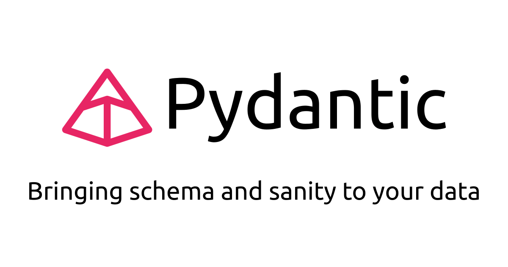
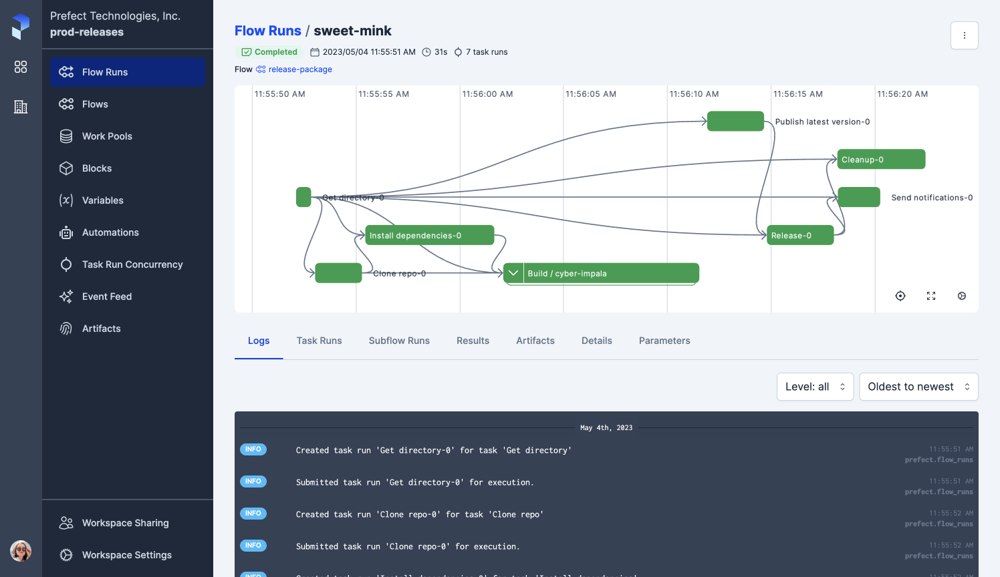

Code
from pydantic import BaseModel
class InventoryItem(BaseModel):
item_name: str
price: float
my_item = InventoryItem(item_name="Banana", price=10)
my_itemInventoryItem(item_name='Banana', price=10.0)DSAN 5500: Data Structures, Objects, and Algorithms in Python

from pydantic import BaseModel
class InventoryItem(BaseModel):
item_name: str
price: float
my_item = InventoryItem(item_name="Banana", price=10)
my_itemInventoryItem(item_name='Banana', price=10.0)invalid_item = InventoryItem(item_name="Banana", price="100 dollar")ValidationError: 1 validation error for InventoryItem
price
Input should be a valid number, unable to parse string as a number [type=float_parsing, input_value='100 dollar', input_type=str]
For further information visit https://errors.pydantic.dev/2.6/v/float_parsingfrom pydantic import BaseModel, EmailStr, PositiveInt
class Employee(BaseModel):
name: str
email: EmailStr
age: PositiveInt
invalid_employee = Employee(
name="Jeef",
email="fakeemail!!!",
age=50
)ValidationError: 1 validation error for Employee
email
value is not a valid email address: The email address is not valid. It must have exactly one @-sign. [type=value_error, input_value='fakeemail!!!', input_type=str]invalid_employee2 = Employee(
name="Jeeferson",
email="valid@email.com",
age=-3
)ValidationError: 1 validation error for Employee
age
Input should be greater than 0 [type=greater_than, input_value=-3, input_type=int]
For further information visit https://errors.pydantic.dev/2.6/v/greater_than


Team objectInventoryItem object for each row)LogarithmicHashTablekey and value separately, or together?tuples or InventoryItems?InventoryItems: What type(s) for item_name? What type(s) for price? üòµtxt, epub (can contain images), pdf (sometimes text is embedded, sometimes not), images of scans, audiobooks